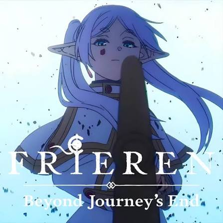
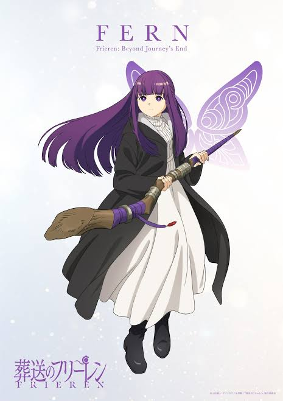
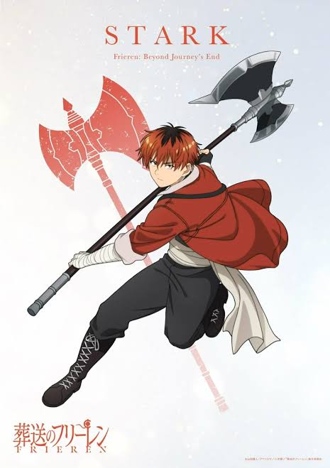
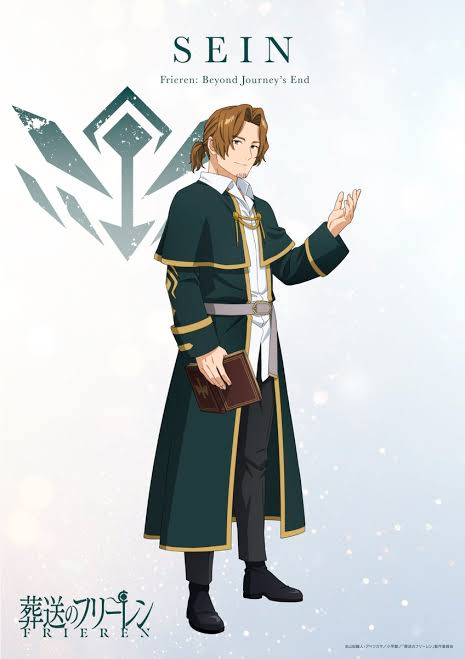

✧ Mage Registry ✧
Meet the companions traveling with Frieren.
Discover their abilities, backgrounds, and magical talents.
── ✦ ── ✧ ── ✦ ──
Choose a Party
✧ CURRENT JOURNEY PARTY ✧
✧ FORMER HERO PARTY ✧
✧ Frieren ✧

Frieren (フリーレン)
| Class: | Mage (Class A Certified) |
| Race: | Elf |
| Age: | Over 1,000 Years |
An elven mage who helped defeat the Demon King.
She travels to understand human emotions and collects
unusual folk magic spells along the way.
✦ Folk Spells Collected ✦
- Turns sweet grapes sour.
- Locates hidden flower fields.
✧ Fern ✧

Fern (フェルン)
| Class: | Mage (Third-Class) |
| Race: | Human |
| Status: | Frieren's Apprentice |
An orphaned human girl raised by Heiter.
She is a talented mage known for her fast spellcasting
and responsible attitude.
✦ Signature Spells ✦
- Zoltraak offensive magic.
- Everyday magic for cleaning clothes.
✧ Stark ✧

Stark (シュタルク)
| Class: | Warrior |
| Race: | Human |
| Status: | Eisen's Disciple |
A powerful young warrior trained by Eisen.
Although he is often afraid, he has great strength
and courage when his friends need him.
✦ Combat Traits ✦
- Powerful axe attacks.
- Strong defensive abilities.
✧ Sein ✧

Sein (ザイン)
| Class: | Priest |
| Race: | Human |
| Status: | Temporary Party Member |
A village priest with exceptional healing abilities.
Despite his love of gambling and other pleasures,
he is a dependable companion who seeks his lost friend.
✦ Priest Abilities ✦
- Healing and recovery magic.
- Curse purification.